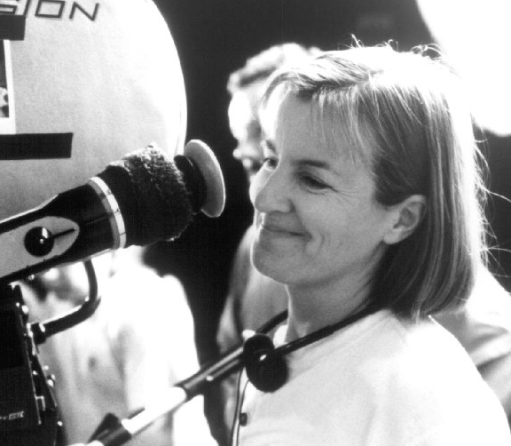

|
Little Women (1994) is a story about a family living in Concord, Massachusetts
during and after the American Civil War. There are four daughters in the family and a
mother, with the father off fighting in the Union Army. In the film the family faces
financial hardships, struggles with the bad news of their father being wounded, and
illness as it follows the daughters through a dramatically changing world after the war.
|

Director Gilliam Armstrong on the set of Little Women
|
This is not a film about great battles or generals and in fact, only has one scene with
soldiers present. Rather, this is a story that focuses on the home front and how the
civilians left behind were affected by a war hundreds of miles away.
The most glaringly obvious point of Little Women that can be commented on is the
issue of gender. While there are several key men throughout the film, the main characters
that the audience follows are women. The perceptions of women during the 1800s have
understandably changed over the last century and after the 1960s and 70s a more feminist
take on history is surfacing and it is evident in the film. In Little Women, the
mother is highly independent and encourages her daughters to do the same and follow their
dreams. The mother even states at one point of the movie that a woman with thoughts and
ambitions of her own is worth more than a woman who thinks nothing of her own mind. This
clear theme of female empowerment may have been caused by rising feminist approach to
history. It may also be contributed to a long standing modern belief that the North was
more progressive than the South and therefore women would have been expectantly more
forward thinking. (Edward L. Ayers "Worrying about the Civil War") The women in this story
have practically every opportunity that a modern day woman has and in many cases takes
advantage of them. There would be little that a woman of the 1990s could be offended by in
this film.
Overall, this film is historically accurate. It does portray the economic hardships that
northerners were facing as well as some of the social aspects of life that were changing
in the midst of a missing generation of men. In regards to our understanding of the memory
of the war, the portrayal of the gender roles in Little Women is somewhat too
picturesque. It is an idealized view of the northern social and gender roles that women
occupied. The North can be attributed to having some more progressive thoughts than the
South, but for the most part, the role of women did not change dramatically from region to
region and this film paints the North a little too 'modernly' to be accurate.
Source: Civil War Memories, University of Wisconsin-Madison, (2011).
|